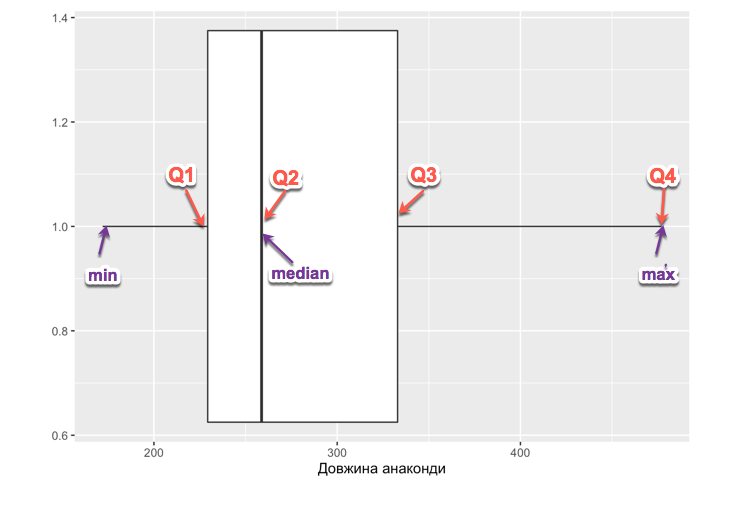
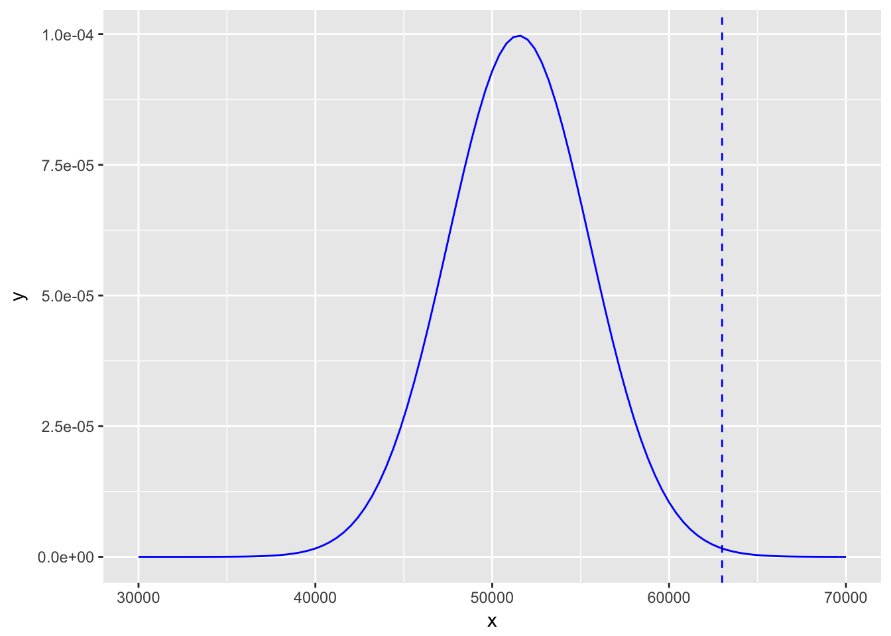

Розділ 3 Центральна тенденція
Матриця(таблиця) даних – стартовий елемент для аналізу даних. Зазвичай йому передує етап збору, очищення та представлення у табличному вигляді. По рядках – респонденти, суб’єкти, учасники, спостереження По стовпцях - xарактеристики кожного запису(змінні). Також важливо звертати увагу на одиниці виміру а також яким чином були зібрані ці дані.
Приклад таблиці:
| Місто | Кімнат | Загальна_площа | Ціна |
|---|---|---|---|
| Вінниця | 3 | 120 | 1875000 |
| Вінниця | 3 | 66 | 975000 |
| Вінниця | 2 | 66 | 1375000 |
| Вінниця | 2 | 44 | 637500 |
| Вінниця | 3 | 63 | 835000 |
| Вінниця | 1 | 31 | 562500 |
Спостереження зібрані з ресурсу https://dom.ria.com/ і містять інформацію про квартири, які продаються. Будемо детальніше аналізувати цей датасет в лабораторній роботі.
Минулого тижня ми розглянули опис центральної тенденції. Залежно від даних, в якості центральної тенденції використовується середнє значення, медіана або мода
Середнє значення підходить для узагальнення кількісних даних(як дискретних, так і неперервних). Формула обрахування проста: \[\frac{\sum_{i=1}^n X_i}{n}\]
Тобто ми суму всіх чисел, ділимо на їх кількість. Наприклад, якщо в нас є група з 5 учнів, оцінки яких 12, 3, 5, 10, 5. Сума їх оцінок дорівнює 35, а середнє значення 7. Однак із використанням середнього значення в якості опису центральної тенденції в даниї є невелика проблема. Якщо є нетипово великі чи малі для даного набору значення – вони роблять великий внесок у значення середнього. Нехай у нас є певне невелике підприємство, яке має 5 працівників. Заробітні плати працівників в гривнях: 5000, 7000, 2000, 4000, 50 000. Середнє значення заробітної плати 13600 грн. Однак, якщо ми відкинемо екстремальне значення 50 000, то отримаємо, що середнє значення зменшилося до 4500.
Медіана – це значення, яке ділить вибірку навпіл, тобто 50% є меншими за це значення, 50% більшими. Основна перевага використання медіани - менша чутливість до екстремальних значень. Для пошуку медіани, дані треба розташувати в зростаючому порядку та поділити на дві частини. Якщо в нас парна кількість спостережень то сусідні значення по краях сумуються та діляться на два. У випадку попереднього прикладу із заробіною платою: 2000, 4000, 5000, 7000, 50 000 Маємо, що посередині знаходиться значення 5000, то краще описує центральну тенденцію заробітної плати на підприємстві.
Мода - значення, яке найчастіше трапляєтться. Може використовуватись як для категоріальних, так і для кількісних даних. Дані можуть мати кілька мод, а можуть не мати жодної.
3.1 Квартилі та інтерквартильний розмах.
Якщо медіана ділить дані порівну, то квартилі ділять їх на чотири частини. Вони позначаються Q1, Q2, Q3, Q4.
- Q1 - 25%
- Q2 - 50% (співпадає з медіаною)
- Q3 - 75%
- Q4 - 100%
Інтерквартильний розмах(IQR) = Q3 - Q1
Нехай маємо ряд 62, 81, 63, 77, 64, 81, 64, 70, 72, 76.
Спочатку відсортуємо дані в зростаючому порядку: 62, 63, 64, 64, 70, 72, 76, 77, 81, 81.
Медіана(та Q2)): \(\frac{70+72}{2} = 71\)
Для обрахунку Q1 та Q3 значення медіани включаються до інтервалу.
Q1: \(\frac{64 + 64 }{2} = 64\)
Q3: \(\frac{76 + 77 }{2} = 76.5\)
Інтерквартильний розмах(ІКР): Q3 - Q1 = 76.5 - 64 = 12.5
Середнє, мода та медіана є описовими статистиками. Також виділяють узагальнення п’яти чисел (five numbers summary). Воно включає в себе:
- Найменше значення
- Перший квартиль
- Медіана (другий квартиль)
- Третій квартиль
- Найбільше значення
Узагальнення п’яти чисел для ряду можна отримати використовуючи R функцію summmary.
summary(c(62, 81, 63, 77, 64, 81, 64, 70, 72, 76))## Min. 1st Qu. Median Mean 3rd Qu. Max.
## 62.00 64.00 71.00 71.00 76.75 81.00Наприклад, застосуємо цю статистику для оцінки довжини анаконд (завантажити набір даних можна за посиланням http://www.public.iastate.edu/~maitra/stat501/datasets/anaconda.dat):
anaconda <- read.table("anaconda.dat")
summary(anaconda$V1)## Min. 1st Qu. Median Mean 3rd Qu. Max.
## 172.0 229.3 258.8 288.5 333.0 477.0quantile(anaconda$V1)## 0% 25% 50% 75% 100%
## 172.000 229.350 258.750 332.975 477.0003.2 Коробчата діаграма
Дозволяє візуалізувати yзагальнення п’яти чисел та знайти нетипові дані(так звані “викиди”) “Викид” (outlier) - значення, яке знаходиться на відстані, меньшій ніж 1.5 ІКР від Q1 або більшій від Q3. 
Якщо ми хочемо детальніше оцінити розподіл довжини анаконд, можемо використати гістограму:
ggplot(anaconda, aes(x=V1)) +
geom_histogram(breaks=seq(0, 500, by = 50),fill="lightblue", col="grey") +
xlab("Довжина анаконди") + ylab("Кількість спостережень")
3.3 Дисперсія та середньоквадратичне відхилення
Середньоквадратичне відхилення(standard deviation) дає розуміння, наскільки далеко знаходиться типове спостереження від середнього значення.
Дисперсія(variance) - обчислюється як середнє значення відстаней від всіх спострежень до середнього значення у квадраті.
\[var =\frac{\sum\limits_{i=1}^{N}(x_{i} - \mu)^2} {N}\]
Середньоквадратичне відхилення(standard deviation) \(\sigma\)- обчислюється як корінь квадратний з дисперсії.
\[\sigma =\sqrt{\frac{\sum\limits_{i=1}^{N}(x_{i} - \mu)^2} {N}}\]
Давайте обрахуємо дисперсію та середньоквадратичне відхилення.
Нехай у нас є ряд: 5, 3, 2, 8, 2.
Середнє значення \(\mu = 4\).
Обчислимо дисперсію та середньоквадратичне відхилення:
Дисперсія:
\[var = \frac{(5-4)^2+(3-4)^2+(2-4)^2+(8-4)^2+(2-4^2)}{5} = \frac{1^2 + (-1)^2+(-2)^2+4^2+(-2)^2 }{5} = \frac{1+1+4+16+4}{5}=5.2\]
Середньоквадратичне відхилення:
\[\sigma = \sqrt{var} = 2.28\]
Дисперсія для ряду 3, 5, 5, 3, 4, середнє значення якого теж 4:
\[var = \frac{(3-4)^2+(5-4)^2+(5-4)^2+(3-4)^2+(4-4^2)}{5} = \frac{(-1)^2 + 1^2+1^2+ (-1)^2+(0)^2 }{5} = \frac{4}{5}=0.8\]
Середньоквадратичне відхилення:
\[\sigma = \sqrt{var} = 0.89\]
Якщо поглянути на обидва ряди, бачимо що значення другого більш тісно розташовані навколо середнього. Значення дисперсії та середньоквадратичного дозволяють це виразити чисельно.
Приклад: Степан має 800 друзів у Facebook, Аня 1000 послідовників в Instagram. Хто більш популярний?
Для відповіді на це питання нам потрібні будуть дані про середнє значення та середньоквадратичне відхилення для кількості друзів у Facebook та послідовників у Instagram.
Facebook: середнє значення \(\mu = 649\), середньоквадратичне відхилення \(\sigma = 50\)
Instagram: середнє значення \(\mu =843\), середньоквадратичне відхилення \(\sigma =60\)
Обчислимо відстань до середнього значення в середньоквадратичних відхиленнях:
Степан: \[ \frac{x - \mu}{\sigma} = \frac{800 - 649}{50} = 3.02\].
Аня: \[ \frac{x - \mu}{\sigma} = \frac{1000 -843}{60} = 2.61\].
Можемо вважати, що Степан більш популярний, оскільки значення кількості його друзів знаходиться далі від середнього значення.
Процес перетворення даних з допомогою формули \(\frac{x - \mu}{\sigma}%\) має назву z-стандартизація, а отримані значення - z-значення. Наступного тижня розглянемо застосування z-значень для оцінки ймовірності.